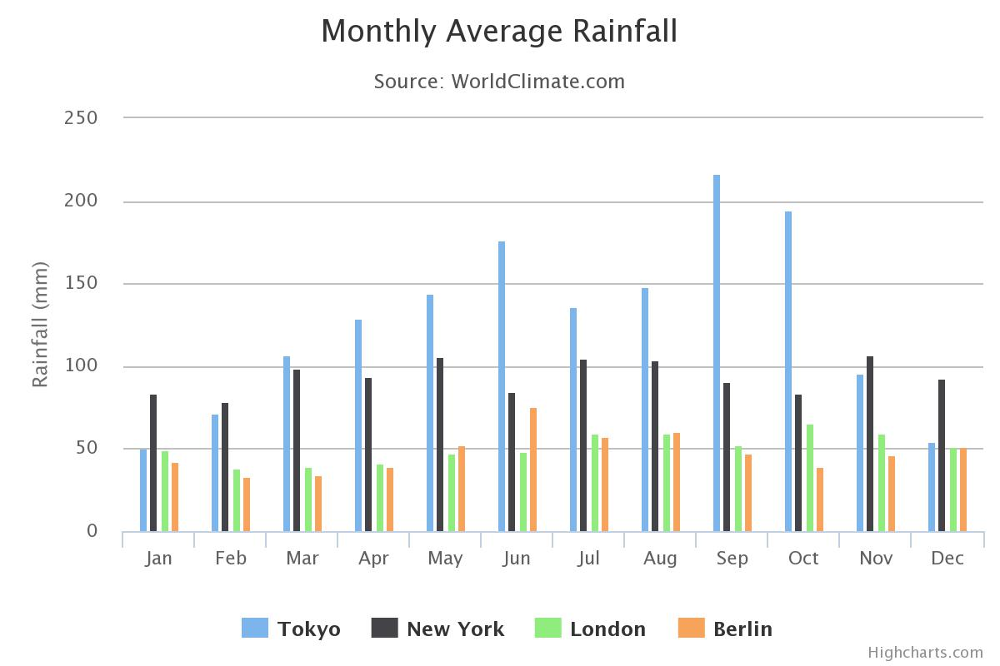

円グラフ
円グラフ（または円チャート）の数値の割合を示すために、セクタに分割された円形の統計グラフである。円グラフでは、各セクタの弧の長さは、それが表す量に比例する。

ドーナツグラフ
ドーナツグラフは、全体の割合として値データが表示されます。カテゴリは、個々のスライスで表されます。ドーナツグラフは、円グラフと機能的に同じです。
棒グラフ
棒グラフまたはバーグラフは、それらが表す値に比例した長さの長方形のバーがチャートである。バーは、垂直方向または水平方向にプロットすることができる

折れ線グラフ
折れ線グラフや線グラフと呼ばれる一連のデータ·ポイントなどの情報を表示するチャートのタイプである「マーカー」直線セグメントで接続さ。それは、多くの分野でのチャートの共通の基本的なタイプです。

列3D
散布図は、散布図、もしくはscattergraphは、データのセットの2つの変数の値を表示するためにデカルト座標を使用して数学的な図の一種である。

セミサークルドーナツ
散布図、散布図、またはscattergraphは、データのセットの2つの変数の値を表示するためにデカルト座標を使用して数学的な図のタイプです

散布図
散布図は、散布図、もしくはscattergraphは、データのセットの2つの変数の値を表示するためにデカルト座標を使用して数学的な図の一種である。

バブルチャート
バブルチャートは、データの3つの次元を表示するチャートのタイプです。バブルチャートは、社会的、経済的、医学的、および他の科学的関係の理解を容易にすることができる